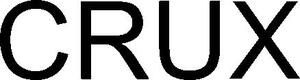

Trade Mark Journal No.2025/024 13 June 2025
WO0000001844292 (11,19)
Office of origin: Australia
Date of International Registration:31 October 2024
Date of designation in the UK:
31 October 2024

International priority date claimed: 6 May 2024
(Australia)
(2448218)
- Class 11
- Lighting apparatus and installations; apparatus for lighting; light fittings, being electric lighting fittings, outdoor lighting fittings and indoor light fittings; lighting fixtures; lighting fixtures being electrical lighting fixtures, indoor lighting fixtures, lighting fixtures for commercial use, lighting fixtures for household use, lighting fixtures for office use and outdoor lighting fixtures; apparatus for lighting for use in bathrooms; apparatus for lighting for use in kitchens; computer controlled lighting apparatus; contact tracks for lighting; decorative electric lighting apparatus; lighting installations; decorative electric lighting installations; electric apparatus for lighting; electric lighting apparatus; electric indoor lighting apparatus and installations; electric tracks for lighting; electrical appliances for lighting; lamps for lighting purposes; lamp stands and fittings; electrical lamps for indoor lighting; electrical lamps for outdoor lighting; LED lighting apparatus; light-emitting diode (LED) lighting apparatus; lighting apparatus for architecture; lighting apparatus for commercial use; outdoor lighting; bathroom installations and bathroom lighting fixtures.
- Class 19
- Free standing sculptures of stone, rock crystals, concrete or marble; ornamental sculptures made of stone, including natural stone and crystals; sculptures made from natural stone or crystals; ornaments primarily incorporating stones, natural stones, natural crystals and marble; decorative ornaments primarily incorporating stones, natural stones, natural crystals and marble; works of art made of natural stone, natural crystals, stone and marble; works of art incorporating natural stone, natural crystals, stone and marble; assembled display units (structures) made of non-metallic materials; display structures made of natural stone, rock crystals and marble; structures of non-metallic materials for display purposes; structures made of natural stone, rock crystals, marble or concrete for display purposes.
Christopher Boots Pty Ltd
Representative: Marquette Intellectual Property Pty Ltd, Olderfleet House, Level 35,, 477 Collins Street, Melbourne VIC 3000, AUSTRALIA